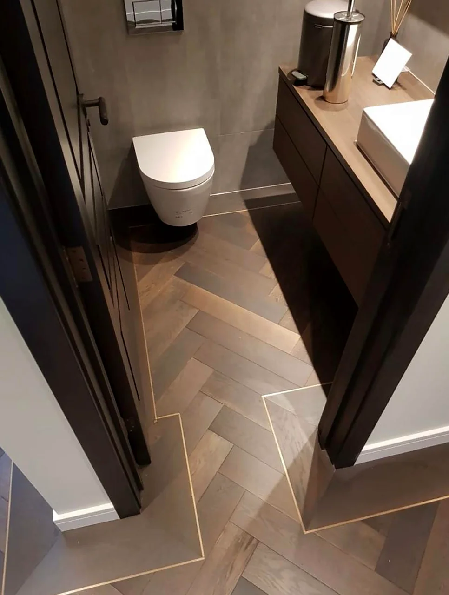

Decor upgrade
Panelled dining room
Wall panelling, a coffered ceiling with downlights and feature wall lights.
Construction services
Specify a finish that suits the space
Project scope
Whether refreshing one room or redecorating a shared building, the condition of the surfaces and the demands of daily use guide preparation and finish selection.
Preparation, access, drying time and finish specification all matter. Photos of defects are particularly helpful when discussing the initial scope.
Recent work
Decor upgrade
Wall panelling, a coffered ceiling with downlights and feature wall lights.

Decor upgrade
Herringbone timber floor with inlaid trims, a wall-hung WC and timber vanity.

Decor upgrade
Timber treads with curved bottom steps and lighting under each step.

Decor upgrade
Marble-effect tiles laid on the diagonal with timber borders.

Decor upgrade
Glass screen, tiled bench and recessed shelves under a sloping roof.